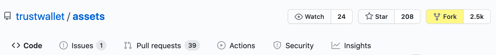

Loading...

Not logged in
You need to log in with your GitHub account, and authorize this application.
No fork found
No forked repository found for user {{loginName}}
You need to fork the assets repository to be able create pull requests.
Your fork should be here: {{gitHub}}/{{loginName}}/{{mainRepoName}}
If you've forked recently, try to reload after a few minutes.
To fork manually, go to the assets repository, and press the Fork button
After completion, reload this page

Pull Requests
Token Search
Add New Token